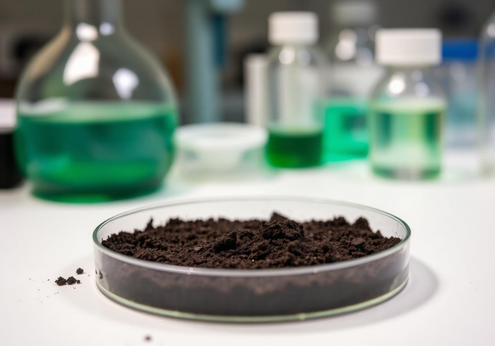

Facility 01
Water Quality Laboratory
Equipped for physical, chemical and biological water testing including spectrophotometry, titrimetry and standard reference protocols.

Facility 02
Soil Analysis Laboratory
Dedicated facility for soil characterization, nutrient profiling and contamination screening with controlled sample preparation.
Facility 03
Microbiology Laboratory
Sterile workspace for microbial culturing, enumeration and identification — supporting environmental and water microbiology studies.